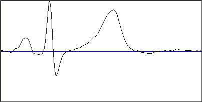

mFindIzoline
Поиск изолинии
Объявление функции
function mFindIzoline(Ws: TWorkspace; MatName: string; Row: Integer;
Koef: Integer = 20): Real;
Назначение
Процедура выполняет поиск изолинии и разработана специально для анализа сигналов ЭКГ. Изолиния - прямая, на которой лежит наибольшее количество точек. Естественно, что реально в сигнале ЭКГ такой прямой быть не может, поэтому мы разбиваем весь сигнал на Koef интервалов (по оси Y). Для каждого из интервалов устанавливаются счетчики, которые ведут учет, сколько точек приходится на тот или иной интервал. Выигрывает тот интервал, чей счетчик принял наибольшее значение. Вы можете задавать в качестве входного массива матрицу из нескольких сигналов, однако процедура будет обрабатывать только строку Row. Процедура возвращает значение изолинии. Ws - ссылка на рабочую область, в которой хранится массив сигналов.
Примеры
Пусть имеется сигнал ЭКГ здорового человека в I-м отведении, графически изображенный на рисунке:

Сигнал нормирован до 100, синяя линия означает ноль по оси Y. Выполним поиск изолинии:
Izoline := mFindIzoline(Base, 'A', 1);
В результате получим Izoline=0.